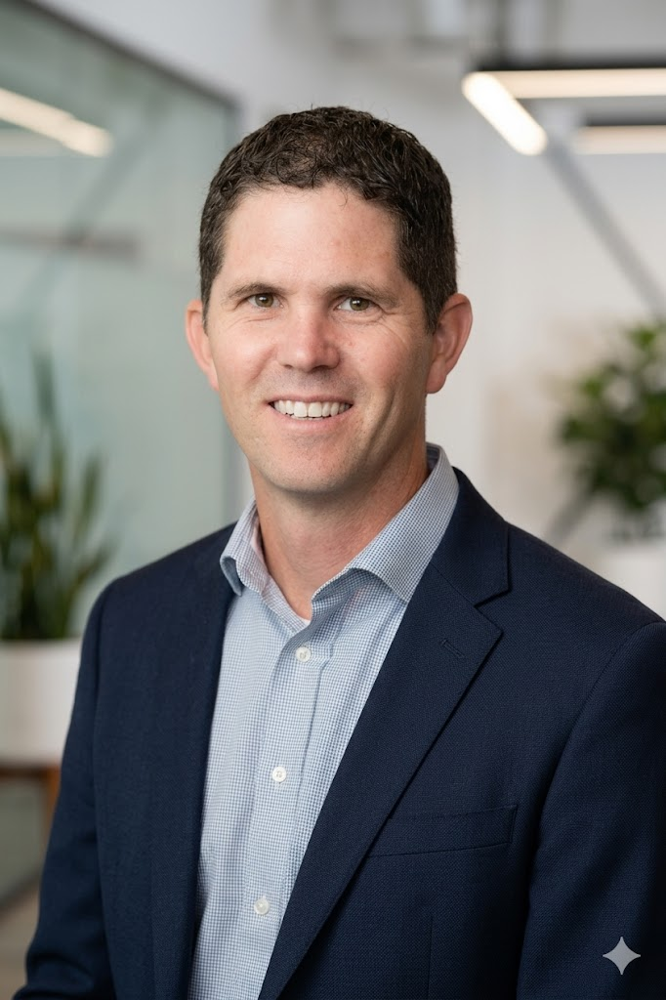

A curious problem solver. From Honoka’a to Spokane.
Hands-on technology from the ground up, the psychology of how people use it, and years of building programs that help people grow.

Founder · Builder · Trainer · Consultant
- Community
- Technology
- Sports
- Psychology
- Business
Where I started
I grew up in Honoka’a, Hawaii, around ranching and community sports. That is where I learned that a small town runs on people who show up and help each other.
I moved to Yakima, Washington for high school, then went to a telecommunications trade school and community college in telecommunications management.
Hands-on technology
My first tech jobs were hands-on. I worked as an assistant systems administrator in Madrid, Spain.
Then I came to Gonzaga University as a telecommunications systems administrator, fitting new technology into older systems that still had to run. I earned my undergraduate degree and my MBA while working there.
How people use technology
I earned my PhD at Washington State University, studying the psychology of technology use. My dissertation looked at problematic social media use and how mindfulness can reduce it.
I also learned from mentors whose big ideas about confidence and identity still shape how I teach and how I work with teams.
Building programs and communities
Today I am an associate professor at Gonzaga, focused on building programs and communities where people learn by doing real work. I also coach teams.
Along the way I have worked in startups, construction, real estate, and consulting. Inland Custom Tech is where I bring all of it to people and organizations across the Inland Northwest.
Helping people engage with their limits and grow through them.
Let’s figure it out together.
Every conversation starts the same way: thirty free minutes, no pitch, and an honest answer about whether I can help.